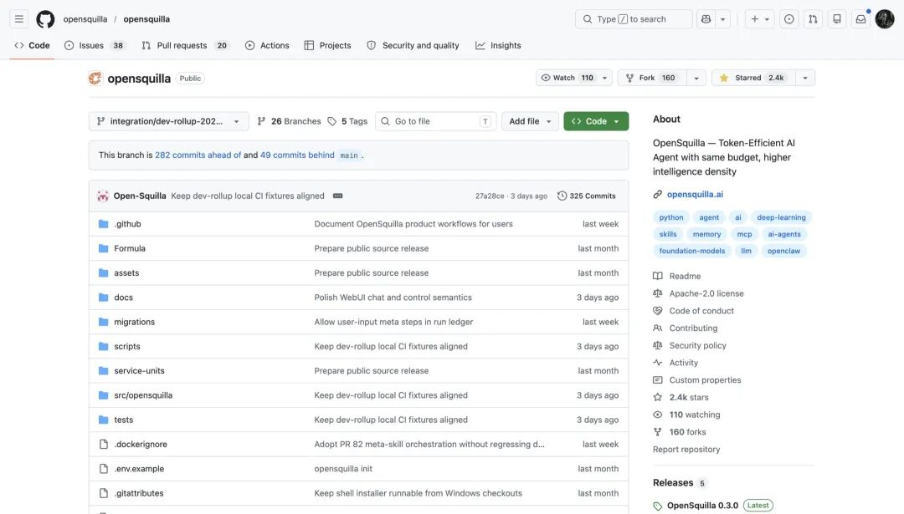
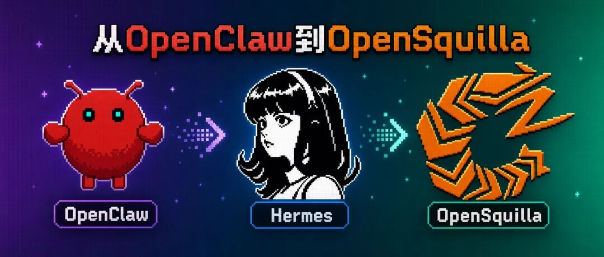
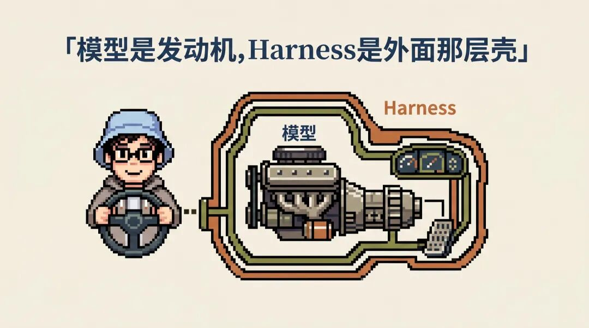
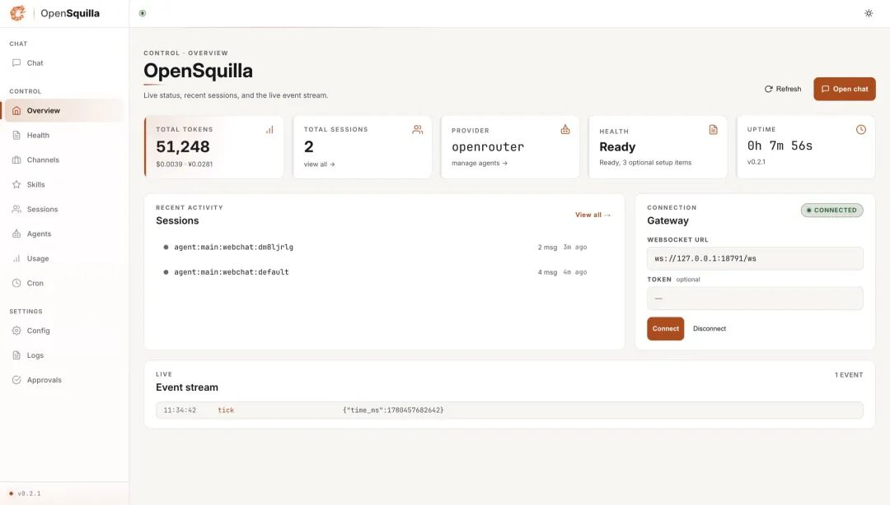
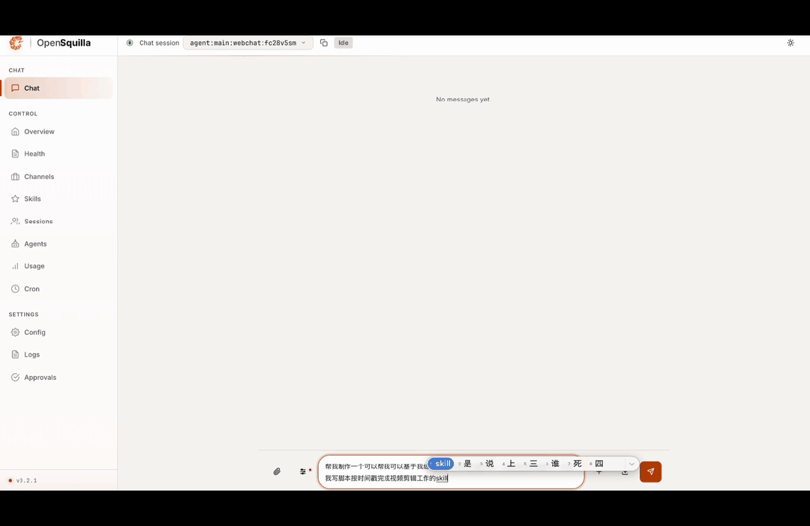
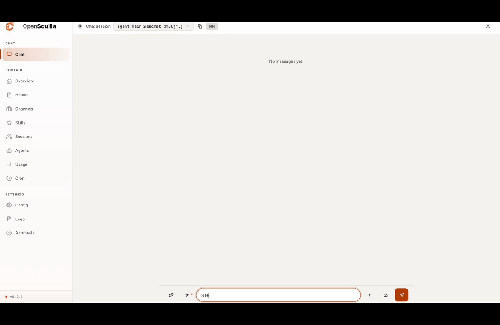
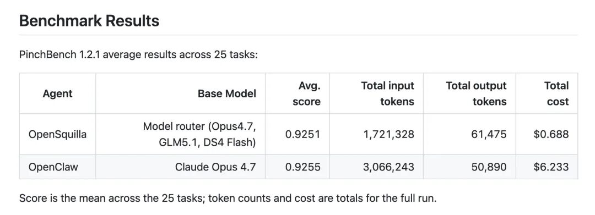

这两个月我一直在折腾Agent skill的事，一是想持续把自己日常的工作流标准化，抽象成skill；二是在想怎么让 AI 自己搞定技能。
先做了女娲，它可以把任何人的思维方式蒸馏成一个能跑的 Skill。后来又做了达尔文，干脆让写好的 Skill 自己进化，分数低的版本自动迭代到分数高的。一个管技能「生出来」，一个管技能「变好」。
两块拼图，到手了。但是唯一的问题是，我的skill也变得越来越多，越来越混乱了。
你让 agent 干一件复杂的事，它得在一堆 Skill 里挑、组合、按顺序接力，这套活到现在我都还常常是需要手动触发和配置。配一个写作流程，我得自己想清楚先搜资料、再学风格、再写初稿、再审校，一步步写死在脑子里。技能造得再多、优化得再好，怎么让 agent 自己把它们组织起来，这第三块拼图我一直没拼好。
然后，这几天在Github 上刷到个2.4k+ 星标的项目：OpenSquilla ，我在它最新的 3.0 里看到一个叫 MetaSkill 的东西，颇受启发。 
先说啥是OpenSquilla
OpenSquilla 是个开源、能本地跑的 AI agent，Python 写的。基本上可以理解为和OpenClaw、Hermes Agent是同一个赛道的产品，但是它在这条开源的agent线上又走了几步，在模型调用和skill的开发/管理上有着更先进的策略。

它的产品主线就一句话：不卷模型，卷 Harness。
Harness 你可以理解成模型外面那层「壳」。模型是发动机，壳是变速箱、油门和导航。大家都在比发动机马力的时候，它去优化那层壳：每一轮该调哪个模型、该用哪个技能、怎么不白烧 token。

这层壳它分两步搭：1.0 先把智能模型路由做进底座，3.0 在上面长出 MetaSkill。我重点测了这两个方向的能力，顺带也把那层路由底座跑了一遍。

第一件：它开机就把我现成的技能库认了进去
装好到技能列表页面的时候，我还挺惊喜的。
它认出了 134 个技能。除了它自带的，我 Claude Code 里那些个人技能它全认了：飞书全家桶、浏览器自动化、我自己写的女娲、达尔文、选题生成、表格处理等，都原封不动出现在列表里。
我没导，它自己扫到的。
技能生态现在在爆炸，社区里几千上万个 Skill 在冒出来，从人写的到 AI 自动生成的。但每个人真正用得顺手的，是自己攒下来那一小撮。OpenSquilla 没让我从零重配，我攒下的这些原样就能用。
第二件：我让它一句话造一个新技能，它真造出来了
这才是我最想看的。
它有个东西叫 MetaSkill Creator，号称你用一句自然语言描述需求，它就自动合成一个新的技能，把手写一个技能的半小时压到几分钟。
我没客气，直接丢了句需求：
「先对一段中文初稿做事实核查，再改写成更口语、去 AI 腔的版本，最后输出一份修改清单。」
它跑了一会儿，给我生成了一个技能文件。不是一段说明，是一张完整的流程图，长这样：
每一步用哪个技能、依赖前面哪一步、结果传给谁，它都替我填好了。这套东西能照着一张流程图、把多步骤真接力跑起来，我是亲手跑通过的。
刚才那个润色技能我测试的时候忘录了😓。为了给你看个完整不剪的，我又换了个需求从头录了一遍，让它造一个能基于视频字幕给剪辑建议、还能写脚本的技能，看它怎么自己一步步拼出来：

这正是我缺的那块拼图。女娲是我造的，让 AI 造单个技能；达尔文也是我造的，让单个技能变好；而第三块「把多个技能组织成一条真能跑的流水线」，我一直没动手，这回是 OpenSquilla 的 MetaSkill 替我补上的。造、优化、组织，到这里才算凑齐。
所以 MetaSkill 到底是什么
官方给它的定义我觉得有点绕，我用大白话讲。
它本质就是一份特殊的 Markdown 文件，开头标一行「这是个 meta 技能」，下面把若干步骤连成一张流程图。但关键不在文件本身。
打个比方。过去那种编排框架，是我提前把流程写死，agent 照着我画好的线跑。MetaSkill 反过来：我不写流程，只把规则和能用的技能告诉模型，让它自己现编一条流程出来。一个是我给你画好路线图，一个是我给你地图和规则、你自己找路。
你用自然语言说目标，剩下的它自己来：挑出相关技能、拼成一条工作流、把工具和上下文都安排好。
而且它不是放任 agent 乱来。这张图交给 runtime 之后，依赖顺序、工具白名单、风险等级、模板安全，都是被强制校验的。哪一步能读文件、哪一步能跑命令，都得提前声明。既让它自己组织，又给它上了护栏。
用一句话解释的话大致就是：以前是我把技能怎么配想清楚再喂给 agent，现在是我把目标说清楚，agent 自己把技能配出来。
顺便说个更省钱的点
测的过程里还有个东西值得单独拎出来：它的模型路由，也就是我前面说的那层 1.0 底座。
我先用火山方舟的豆包测。OpenSquilla 在里面内置了四档模型，从最便宜的 mini 到最强的 code 版，路由器会判断每一轮任务的难度，自动挑。
我让它用一句话解释 HTTP，它走了最便宜的 mini，没开思考。我给它出了道狼、羊、白菜过河、还要顺带分析这题和图着色问题抽象共性的难题，它自己升到了最强那档，还主动打开了深度思考。这两档的输入价格差大概 16 倍。
光在一家厂商里挑还不够意思。我又换成 OpenRouter 测了一遍，它能在几十家厂商的模型之间跨着挑。同样那道 HTTP 题，它路由到了 DeepSeek 一个便宜的 flash 模型；同样那道过河难题，它直接跳到了 Claude 的 Opus，还是打开了深度思考。简单活交给国产便宜模型，难活才上最贵的旗舰，这个选择是跨着厂商做出来的。
还有个对国内挺友好的点。它不挑食，除了 OpenRouter 这种海外聚合，国内像火山方舟、阿里云、腾讯云这些模型一大把的云厂商也能直接接。你想全程国产，照样跑得起来。
不管哪种接法，账都一样省：能用便宜的就不动贵的，钱花在真正难的那几轮上。而且这个难度判断是在我本地做的，没把我的问题发给某个外部模型去打分。
说点更深一层的体会。现在几乎所有 agent 产品，都是把选模型这件事明晃晃甩给用户：下拉菜单里一排模型，你自己挑。我还算会挑的那种，天天做模型评测，谁擅长写代码、谁推理强、谁便宜，我门儿清。
但正因为天天干这个，我越来越觉得这不该是最终形态。普通用户凭什么要懂这些？让人为每一次对话操心该选哪个模型，本身就是产品没做好分内的事。 自动路由把这份负担免掉，你只管说要干什么，剩下的交给它分配。
这就是「卷 Harness」的实感。同样一笔预算，能多干不少活。

这还只是随手一次请求的演示。我又看了它整整 25 个任务跑完的总账：和单用 Opus 的方案比，分数基本没任何差异，花的钱却差出了一个数量级。

写在最后
回到那三块拼图。
造（女娲）、优化（达尔文），这两块我自己拼上了。第三块，组织，一直空着。说拼图其实不太准，组织更像盖在前两块上面的一层。可缺了这层，技能造得再多再好，也各干各的，串不成事。
这两个月我最深的体感是，当技能多到一定程度，瓶颈早就不是模型聪不聪明，而是这一堆技能能不能被组织起来。 OpenSquilla 给的答案，是把「组织」这件事做进 agent 的底座，让它自己来，而不是等我一条条配。从 1.0 的智能路由到 3.0 的 MetaSkill，走的都是「卷 Harness 不卷模型」这一条路。
行业的注意力，几乎都在「模型又涨了几分」上。但工作流编排，会不会正在变得比参数量更重要？我不敢下定论。只是在我这种手里攥着一堆技能的人身上，这个方向，我是真希望它走通的。
它是开源的，GitHub 上搜 OpenSquilla 就能找到，想自己装来试的可以去翻翻。我那块拼图，是真被它补上的。